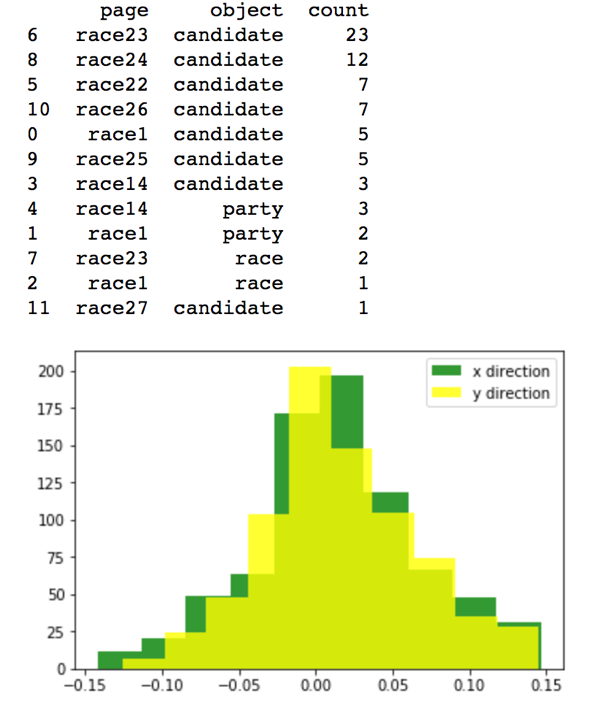
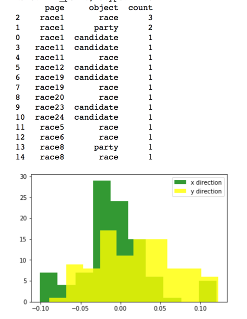

Eye-Tracking Study for Voting System
Research Design, Eye-Tracking Study, Data Analysis
Project Overview
In the case of ballots, there have been many famous cases of poorly-designed ballots leading to voter errors substantial enough to change the outcome of an entire election. This is likely due to subtle features of the ballot design interacting poorly with unanticipated voter strategies.
To better understand people’s use of two alternative memory strategies, retrieval-based VS. recognition-based, we used eye-tracking techniques to examine the the way voters sought information on the display.
We present evidence that voters in a mock election do, in fact, use both retrieval-and recognition-based strategies to cast votes, sometimes alternating between them. We then discuss the importance of considering these alternate cognitive strategies when designing user interfaces.
This project was published as a Human Factors and Ergonomics Society (HFES) conference paper.
My Contributions
I worked at Byrne lab as a research assistant for a year. For the fall semester, I worked on eye tracking data analysis from 16 subjects using the voting system on a computer. The goal of the analysis is to investigate which areas of the voting system interface (e.g. party, candidate, race) the subjects would fixate at, its frequency and time length, so that we can better understand where people pay attention to.
For the spring semester, I built a paper ballot interface for eye-tracking studies and ran 20 user studies independently. The goal of the paper ballot interface is to build something similar to real life voting scenario to collect data on which area (race, party, candidate name) the subjects would fixate at, so that we can understand their voting strategies and compare the results with those of multi-race ballot that I analyzed previously.
Eye-tracking Data Analysis
Fixation script
After cleaning and adding necessary columns on Excel, I wrote functions on Python to achieve the following:
decide whether the fixation is on the screen
Calculate the distance of the fixation and each object in the screen, find the closest object, and record the distance
Calculate the direction of the object and the fixation, both on X-axis and Y-axis
Add these variables to the original data frame to create a new Excel file
Fixation analysis
I first need to identify if there are any data skewed by eye tracker issues (e.g. constantly off the screen by a certain distance). So I plot the distribution of distance and direction for each subject, which ended up removing the data of subject 7 because of the low number of fixations.
Afterwards, to understand the fixation pattern of subjects, I wrote functions to 1) count the number of fixations for each race and 2) count the number of fixation on party, race, and candidate for each race and subject.
Based on the tables generated, most subjects fixated at the review page/ instruction page/ race 1 the most, and the fixations on subject 22-27 are also relatively large.
Furthermore, subjects paid attention to different information when using the voting system. For instance, subject 12 looked at candidate name the most, then party, then race, while subject 6 looked at race the most, then party, then candidate.

Fixation analysis output for subject 14

Fixation analysis output for subject 7, which I deleted because of tracker issues